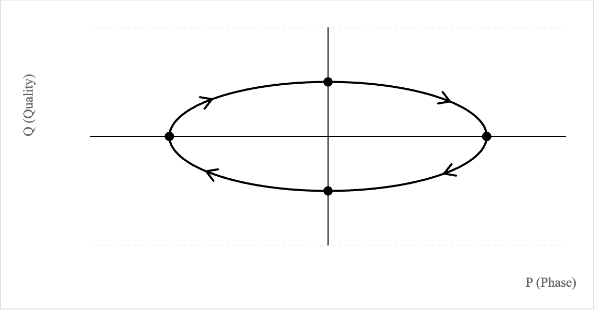
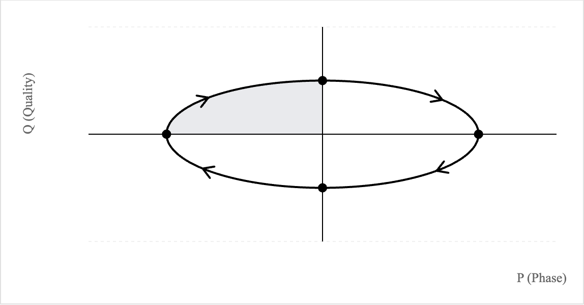
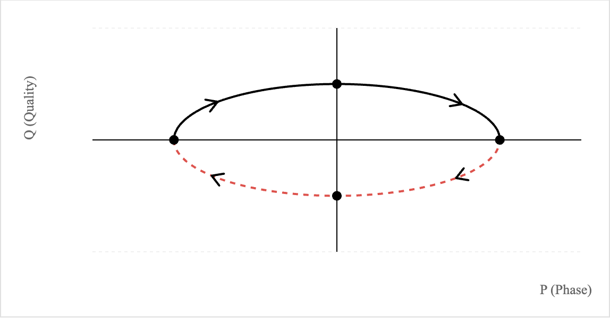
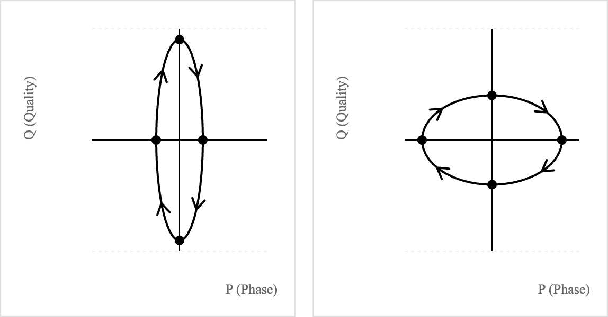
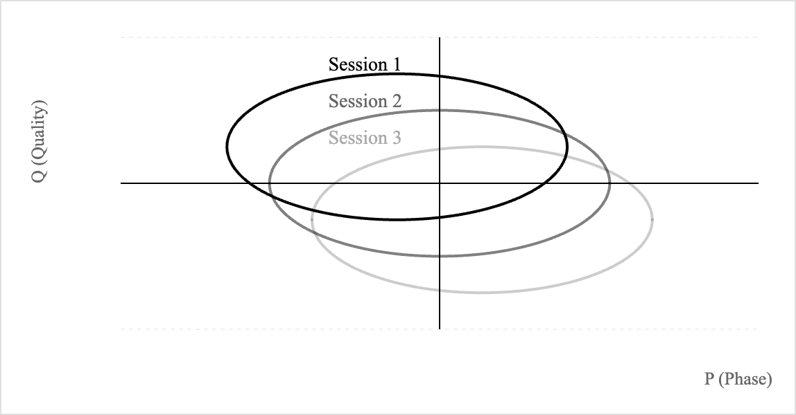

<!doctype html>
<html lang="en">
  <head>
    <meta charset="UTF-8" />
    <link rel="icon" type="image/svg+xml" href="/vite.svg" />
    <meta name="viewport" content="width=device-width, initial-scale=1.0" />
    <meta name="description" content="Lucas Haines - Designer, developer, writer" />
    <meta name="theme-color" content="#000000" />

    <!-- Figtree Font -->
    <link rel="preconnect" href="https://fonts.googleapis.com" />
    <link rel="preconnect" href="https://fonts.gstatic.com" crossorigin />
    <link
      href="https://fonts.googleapis.com/css2?family=Figtree:wght@400;500;600&display=swap"
      rel="stylesheet"
    />

    <title>Lucas Haines</title>
  </head>
  <body>
    <div id="root"></div>
    <script type="module" src="/src/main.jsx"></script>
  </body>
</html>

    a { color: #111; text-decoration: underline; text-decoration-thickness: 1px; text-underline-offset: 3px; }
    a:hover { color: #555; }

    /* --- About --- */
    .about-inner {
      max-width: 560px;
      margin: 0 auto;
      padding: 110px 24px 80px;
    }
    .about-heading {
      font-size: clamp(1.5rem, 3vw, 1.9rem);
      font-weight: 400;
      text-align: center;
      margin-bottom: 56px;
    }
    .about-body p { margin-bottom: 1.2em; }
    .about-body p:last-child { margin-bottom: 0; }

    /* --- Landing selector --- */
    .selector {
      position: fixed; inset: 0;
      display: flex; flex-direction: column;
      align-items: center; justify-content: center;
      padding: 60px 24px;
      text-align: center;
      background: #fff;
      transition: opacity 0.4s ease, visibility 0.4s ease;
      z-index: 100;
    }
    .selector.hidden { opacity: 0; visibility: hidden; pointer-events: none; }
    .selector h1 {
      font-size: clamp(1.5rem, 3vw, 1.9rem);
      font-weight: 400;
      letter-spacing: 0.01em;
      margin-bottom: 64px;
    }
    .selector ol { list-style: none; }
    .selector ol li { margin: 12px 0; }
    .selector ol a {
      font-size: clamp(1rem, 2vw, 1.2rem);
      text-decoration: none;
      color: #111;
    }
    .selector ol a:hover { color: #777; }
    .selector ol .num { font-style: italic; color: #aaa; margin-right: 10px; }

    /* --- Immersive (genre) views --- */
    .immersion {
      position: fixed; inset: 0;
      opacity: 0; visibility: hidden;
      pointer-events: none;
      transition: opacity 0.35s ease, visibility 0.35s ease;
      background: #fff;
      color: #111;
      overflow-y: auto;
      overflow-x: hidden;
      z-index: 50;
    }
    .immersion.active { opacity: 1; visibility: visible; pointer-events: auto; }

    .back-btn {
      position: fixed;
      top: 20px; left: 20px;
      background: none;
      border: none;
      font-family: inherit;
      font-size: 0.95rem;
      color: #555;
      cursor: pointer;
      padding: 8px 10px;
      min-width: 44px;
      min-height: 44px;
      z-index: 200;
    }
    .back-btn:hover { color: #111; }
    .back-btn span { margin-right: 6px; }

    /* --- Essays --- */
    .essays-inner {
      max-width: 720px;
      margin: 0 auto;
      padding: 110px 24px 80px;
    }
    .essays-header { text-align: center; margin-bottom: 64px; }
    .essays-heading {
      font-size: clamp(1.5rem, 3vw, 1.9rem);
      font-weight: 400;
    }
    .essay-index {
      display: flex; flex-direction: column;
      max-width: 540px;
      margin: 0 auto 80px;
    }
    .essay-index a {
      display: flex;
      align-items: baseline;
      gap: 14px;
      padding: 14px 0;
      text-decoration: none;
      color: #111;
    }
    .essay-index a:hover { color: #777; }
    .essay-index .essay-num {
      font-style: italic;
      color: #aaa;
      width: 26px;
      flex-shrink: 0;
    }
    /* Single-piece reading mode: only the chosen essay/poem shows. */
    .essays-inner .essay-piece,
    .essays-inner .essay-rule { display: none; }
    .essays-inner .essay-piece.revealed { display: block; }
    .essays-inner.reading .essays-header,
    .essays-inner.reading .essay-index { display: none; }

    .poems-inner .poem-entry { display: none; }
    .poems-inner .poem-entry.revealed { display: flex; flex-direction: column; align-items: center; }
    .poems-inner.reading .essays-header,
    .poems-inner.reading .essay-index { display: none; }

    .stories-inner .story-entry { display: none; }
    .stories-inner .story-entry.revealed { display: block; }
    .stories-inner.reading .essays-header,
    .stories-inner.reading .essay-index { display: none; }

    .piece-back {
      display: block;
      width: fit-content;
      margin: 0 auto 36px;
      font-style: italic;
      color: #666;
      font-size: 0.95rem;
      cursor: pointer;
      background: none;
      border: none;
      font-family: inherit;
      padding: 6px 8px;
    }
    .piece-back:hover { color: #111; }

    .essay-piece {
      margin-bottom: 100px;
      scroll-margin-top: 20px;
    }
    .essay-piece-title {
      font-size: clamp(1.4rem, 2.4vw, 1.7rem);
      font-weight: 400;
      text-align: center;
      margin-bottom: 48px;
      line-height: 1.25;
    }
    .essay-body p {
      margin-bottom: 1.2em;
      text-indent: 2em;
    }
    .essay-body p:first-of-type { text-indent: 0; }
    .essay-body em, .essay-body i { font-style: italic; }
    .essay-quote {
      font-style: italic;
      max-width: 420px;
      margin: 0 auto 36px;
      padding: 12px 24px;
      border-left: 2px solid #ccc;
      text-align: left;
      color: #444;
    }
    .essay-rule {
      width: 60px; height: 1px;
      background: #ccc;
      margin: 0 auto 70px;
    }

    /* --- Poems --- */
    .poems-inner {
      max-width: 680px;
      margin: 0 auto;
      padding: 110px 24px 80px;
    }
    .poems-inner .poem-entry {
      text-align: center;
      margin-bottom: 100px;
      scroll-margin-top: 20px;
    }
    .poems-inner .poem-entry:last-child { margin-bottom: 0; }
    .poems-inner > .essay-index { margin-bottom: 80px; }
    .poem-title {
      font-size: clamp(1.6rem, 3vw, 2.1rem);
      font-weight: 400;
      margin-bottom: 48px;
    }
    .poem-body {
      font-style: italic;
      white-space: pre-line;
      max-width: 560px;
      margin: 0 auto;
      line-height: 1.85;
    }

    /* --- Stories --- */
    .stories-inner {
      max-width: 680px;
      margin: 0 auto;
      padding: 110px 24px 80px;
    }
    .story-title {
      font-size: clamp(1.5rem, 2.6vw, 1.9rem);
      font-weight: 400;
      text-align: center;
      margin-bottom: 56px;
    }
    .story-body p {
      margin-bottom: 1.2em;
      text-indent: 2em;
    }
    .story-body p:first-of-type { text-indent: 0; }

    /* --- Research (now an HTML study reader, same shape as poems/essays) --- */
    .research-inner {
      max-width: 720px;
      margin: 0 auto;
      padding: 110px 24px 80px;
    }

    .study-entry { display: none; }
    .study-entry.revealed { display: block; }
    .research-inner.reading .essays-header,
    .research-inner.reading .essay-index { display: none; }

    .study-title {
      font-size: clamp(1.5rem, 2.6vw, 1.9rem);
      font-weight: 400;
      text-align: center;
      line-height: 1.25;
      margin-bottom: 10px;
    }
    .study-subtitle {
      font-style: italic;
      text-align: center;
      color: #555;
      margin-bottom: 56px;
    }
    .study-body {
      line-height: 1.7;
    }
    .study-body h2 {
      font-weight: 700;
      font-size: 1.4rem;
      margin: 40px 0 16px;
      text-align: center;
    }
    .study-body h3 {
      font-weight: 400;
      font-style: italic;
      font-size: 1.1rem;
      margin: 28px 0 12px;
    }
    .study-body p {
      margin-bottom: 1.1em;
      text-indent: 1.8em;
    }
    .study-body p:first-of-type,
    .study-body h2 + p,
    .study-body h3 + p,
    .study-body figure + p,
    .study-body .study-equation + p { text-indent: 0; }
    .study-equation {
      text-align: center;
      font-style: italic;
      font-size: 1.15rem;
      margin: 24px 0 28px;
    }
    /* Figures: render at their natural aspect ratio so the chart can never be
       squashed or stretched. */
    .study-figure {
      margin: 36px 0;
      text-align: center;
    }
    .study-figure img {
      width: 100%;
      height: auto;
      max-width: 560px;
      display: block;
      margin: 0 auto;
    }
    .study-figure figcaption {
      font-style: italic;
      color: #555;
      font-size: 0.95rem;
      margin-top: 10px;
      line-height: 1.4;
    }
    .study-refs {
      list-style: decimal;
      padding-left: 28px;
      font-size: 0.95rem;
      line-height: 1.55;
    }
    .study-refs li { margin-bottom: 0.7em; text-indent: 0; }
    .study-pdf-link {
      text-align: center;
      margin-top: 48px;
      text-indent: 0;
    }
    .study-body sup {
      font-size: 0.7em;
      vertical-align: super;
      line-height: 0;
    }

    /* --- Photography --- */
    .photography-header {
      text-align: center;
      padding: 100px 24px 24px;
    }
    .photography-kicker { font-style: italic; color: #666; margin-bottom: 12px; }
    .photography-title {
      font-size: clamp(2rem, 4vw, 2.4rem);
      font-weight: 400;
    }
    /* Masonry-style layout: each photo keeps its native aspect ratio, columns
       balance themselves, and photos sit flush against each other. */
    .photo-grid {
      max-width: 1400px;
      margin: 0 auto;
      padding: 24px 8px 80px;
      column-count: 4;
      column-gap: 4px;
    }
    .photo-grid button {
      background: none; border: 0; padding: 0; cursor: pointer;
      display: block;
      width: 100%;
      margin: 0 0 4px;
      break-inside: avoid;
      overflow: hidden;
    }
    .photo-grid img {
      width: 100%;
      height: auto;
      display: block;
      transition: opacity 0.2s ease;
    }
    .photo-grid button:hover img { opacity: 0.85; }
    @media (max-width: 1100px) { .photo-grid { column-count: 3; } }

    /* --- Lightbox --- */
    .lightbox {
      position: fixed; inset: 0; z-index: 5000;
      background: rgba(255,255,255,0.97);
      display: flex; align-items: center; justify-content: center;
      opacity: 0; pointer-events: none;
      transition: opacity 0.2s;
    }
    .lightbox.active { opacity: 1; pointer-events: auto; }
    .lightbox img { max-width: 92vw; max-height: 88vh; object-fit: contain; }
    .lb-close, .lb-nav {
      background: none; border: none;
      font-family: inherit;
      color: #111;
      cursor: pointer;
      position: absolute;
      z-index: 5001;
    }
    .lb-close {
      top: 12px; right: 12px;
      font-size: 1.8rem;
      min-width: 44px; min-height: 44px;
    }
    .lb-nav {
      top: 50%; transform: translateY(-50%);
      font-size: 2.4rem;
      padding: 12px;
      min-width: 48px; min-height: 64px;
    }
    .lb-prev { left: 4px; }
    .lb-next { right: 4px; }
    .lb-info {
      position: absolute;
      bottom: 12px;
      left: 50%;
      transform: translateX(-50%);
      font-size: 0.85rem;
      font-style: italic;
      color: #555;
      text-align: center;
    }

    /* --- Mobile --- */
    @media (max-width: 600px) {
      body { font-size: 16px; }
      .selector { padding: 40px 20px; }
      .essays-inner, .poems-inner, .stories-inner, .research-inner {
        padding: 90px 18px 60px;
      }
      .photography-header { padding: 90px 18px 16px; }
      .photo-grid { column-count: 2; padding: 16px 6px 60px; column-gap: 3px; }
      .photo-grid button { margin-bottom: 3px; }
      .essay-body p, .story-body p { text-indent: 1em; }
      .back-btn { top: 10px; left: 10px; font-size: 0.85rem; }
    }
  </style>
</head>
<body>

  <!-- ===== SELECTOR (LANDING) ===== -->
  <main class="selector" id="selector">
    <h1>Lucas Haines</h1>
    <ol>
      <li><a href="#" data-genre="essays">Essays</a></li>
      <li><a href="#" data-genre="poems">Poems</a></li>
      <li><a href="#" data-genre="stories">Short Stories</a></li>
      <li><a href="#" data-genre="photography">Photography</a></li>
      <li><a href="#" data-genre="research">Research</a></li>
      <li><a href="#" data-genre="about">About</a></li>
    </ol>
  </main>

  <!-- ===== ESSAYS ===== -->
  <section class="immersion view-essays" data-view="essays">
    <button class="back-btn" data-back><span>&larr;</span> Back</button>
    <div class="essays-inner">
      <header class="essays-header">
        <h1 class="essays-heading">Essays</h1>
      </header>

      <nav class="essay-index">
        <a href="#essay-paradise-lost"><span>Examining the Integrity of Free Will in <em>Paradise Lost</em></span></a>
        <a href="#essay-mask"><span>The Mask Is Who We Are</span></a>
        <a href="#essay-odysseus"><span>Odysseus: The Master Weaver of Story and Self</span></a>
        <a href="#essay-antigone"><span>Antigone's Conservative Rebellion</span></a>
      </nav>

      <article id="essay-paradise-lost" class="essay-piece">
  <button class="piece-back" type="button">&larr; Back to list</button>
        <h2 class="essay-piece-title">Examining the Integrity of Free Will in <em>Paradise Lost</em></h2>
        <div class="essay-body">
        <p>From its opening line, John Milton's <em>Paradise Lost</em> presents the fall of man not as an open possibility but as a settled fact. "Of man's first disobedience, and the fruit / of that forbidden tree whose mortal taste / brought death into the world and all our woe" (1.1-3). The Fall is grammatically over before Satan has taken a single step. The poem does not begin at the start of the story but rather at the end of it. Milton reaches back to explain a catastrophe that has already happened. He invokes the muse not to explain what might happen but to illuminate what already did, framing the poem as an explanation rather than a story whose ending is in question. "Till one greater man / restore us and regain this blissful seat" (1.4-5). Even the "hope" of redemption is declared as a future certainty, not a possibility. Yet Milton insists throughout the poem that Adam and Eve are free agents who choose their fates. This contradiction sits at the heart of the poem: if the fall happens on line one, how is it ever a choice? Despite Milton's insistence that Adam and Eve possess genuine free will, the logic of God's omnipotence and omniscience reveals that the fall is predetermined from the moment of creation.</p>
        <p>Milton is not unaware of the problem and offers a direct defence, arguing that God's foresight of the fall does not mean He predetermines it, and that both standing and falling remain possible outcomes. God cannot be blamed for an action He does not cause. "Sufficient to have stood, though free to fall" is Milton's clearest formulation of this position, and God reinforces it by saying, "If I foreknew / foreknowledge had no influence on their fault" (3.99, 117-118). God further insists that Adam and Eve "Themselves decreed / their own revolt, not I," placing the origin of the fall on human agency, not God's (3.116-117). On its own terms, this is a coherent argument. Foreknowledge is not the same thing as authorship, and Milton is right that the two must be separate for free will to be possible. A God who sees the future is categorically different from one who predetermines it, and Milton leans into this distinction considerably.</p>
        <p>This defence collapses because in reality, God is not merely a witness; He is the creator who built the very humans He knows will fall. A passive observer and an omnipotent architect cannot be the same thing, and Milton ignores half of what God is. God knows Adam and Eve will fail even before He makes them, yet He makes them anyway. That is not an observation but a decision. God could create humans to succeed or not create them at all. Choosing to proceed with creation means choosing the fall. God Himself says, "Whose fault / Whose but his own? Ingrate, he had of me / all he could have" (3.96-98). This statement draws attention to Milton and God's logical error. If He gave Adam and Eve everything they needed to stand but built them to fall, then Adam and Eve's sin overrides God's omnipotence, which is by definition impossible. This fact breaks down God and Milton's narrative argument. God chooses the fall, and Milton deceives the reader in order to market Christianity to the audience.</p>
        <p>The dramatic framing of Satan's mission demonstrates how Milton's rhetoric attempts to persuade the reader that free will exists at all. Because the reader is told the end before the story even begins, Satan's perilous journey is in fact guaranteed to succeed. When Satan details his eventual journey out of hell, he says, "Long is the way / and hard that out of Hell leads up to light" (2.432-433). Milton is making the argument that Satan's journey is dangerous and unlikely to succeed, since Satan needs to escape treacherous hell to reach the "light." This language is misleading because Satan's fate is sealed. When Satan enters Eden, the archangels notice him and actively acknowledge his presence. If the archangels know Satan's plot, then the omniscient God knows as well. God knows and does not thwart Satan's plot because He designed it. Milton uses his literary skill to build suspense in <em>Paradise Lost</em>, but this is ironic because the entire story is guaranteed in the first few lines of the book. Satan truly has no agency to ensure the success of his mission.</p>
        <p>Ultimately, <em>Paradise Lost</em> cannot reconcile its theological claim with its own logic. The God Milton portrays is not a passive observer but a silent architect. Milton assigns blame to humanity to protect his own Christian beliefs. The poem opens with the fall accomplished, places an omnipotent God behind it, and asks the reader to believe that Adam and Eve are truly free. The tragedy of <em>Paradise Lost</em> is not that humans choose wrong but that they never choose at all.</p>
        </div>
      </article>

      <div class="essay-rule"></div>

      <article id="essay-mask" class="essay-piece">
  <button class="piece-back" type="button">&larr; Back to list</button>
        <h2 class="essay-piece-title">The Mask Is Who We Are: A Poem Analysis</h2>

        <blockquote class="essay-quote">I resemble everyone<br>but myself, and sometimes see<br>in shop windows,<br>despite the well-known laws<br>of optics,<br>the portrait of a stranger,<br>date unknown,<br>often signed in a corner<br>by my father.</blockquote>

        <div class="essay-body">
          <p>"Self-Portrait" by A.K. Ramanujan is about the meaning of identity and inner masks. Depending on the reading, "Self-Portrait" has a dual meaning, and in essence, the poem itself wears a mask. One can compare the two scenarios to determine the laws of identity and what it means to wear a mask. The title itself becomes ironic, as the poem questions whether true self-portraiture is even possible when identity remains so unclear. Ramanujan employs ambiguity to reflect the struggle of understanding what identity is. The poem's refusal to provide clear answers mirrors both the speaker's and humanity's struggle to understand who we are beneath the various roles and influences that shape us.</p>
          <p>The poem's structure leaves the meaning ambiguous and adds weight to its message. It is written in free verse and reads as if the speaker is talking directly to the reader. There is no musicality to the poem, which adds gravitas and a certain seriousness to the speaker's words. Minimal punctuation creates an open-ended feel. The poem is composed of a single stanza and avoids tangible description, which allows the reader to interpret it in many different ways. Ramanujan's deliberate rejection of traditional poetic structures such as the sonnet or ballad reinforces the speaker's feeling of estrangement from those around him. The sparse language creates empty spaces that invite readers to fill in their own experiences.</p>
          <p>Ramanujan's poem offers two different messages for the reader to connect to. The first reading frames the speaker as a man in an existential crisis. The poem begins with "I resemble everyone / but myself," where the speaker declares that he is a culmination of every stranger he has encountered. This suggests he possesses no original identity of his own. In the middle of the poem, the speaker describes looking at a shop window and seeing a stranger, which is his own reflection. Because he lacks any authentic sense of self, he has become a stranger even to himself. The poem then continues with "often signed in a corner / by my father," which introduces a shift in the speaker's reflection on identity formation. Here, Ramanujan creates an ironic juxtaposition with the poem's title by suggesting that the speaker's father, not the speaker himself, was the true artist who created this "self-portrait." This metaphor implies that the speaker's identity was shaped heavily by his father's influence, reinforcing his lack of autonomous selfhood.</p>
          <p>The second way to interpret these lines is as a reflection on identity in general. The speaker sees a stranger through the window rather than his own reflection, and this time he believes the stranger is indifferent to him. This idea is confirmed in the closing lines, where the stranger he sees in the window is "often signed in a corner / by my father." The stranger is the same as the speaker because both were created by the same father. In contrast to the first interpretation, the father in this reading represents God. God created both the speaker and the stranger, making them fundamentally connected despite their apparent differences. This universal-creation interpretation suggests that all human beings share a common origin and essence, even when they appear as strangers to one another. The reason they appear different is that they wear different masks. What we perceive as differences between ourselves and others are merely surface-level disguises of ethnic and physical appearance that conceal our shared humanity and divine origin.</p>
          <p>The fact that both these interpretations coexist and make sense gives rise to a third theory of identity: that identity itself is multifaceted and not simply definable. By comparing the two readings, one can decipher the laws that govern identity. In other words, identity is not a list of personal traits and behaviors but a science governed by universal principles.</p>
          <p>The first law of identity reveals itself in the shared origin implied by being "signed in a corner / by my father." This law declares that everyone's identity starts as the same blank canvas. Before any inspiration has occurred, before any assimilation takes place, all humans possess identical potential for selfhood. Whether we interpret the "father" as a biological parent or as God, the fundamental principle remains the same: we all begin from the same source. The stranger in the window shares the same signature, the same creator, the same essential beginning as the speaker. This law suggests that beneath all the layers of acquired identity lies a common humanity that connects us to every other person we encounter.</p>
          <p>The second law of identity emerges from the speaker's declaration that he "resembles everyone / but myself." This law states that identity is acquired only through assimilation to other people. Like creativity, no identity is original; it is inspired by others. The speaker has become a composition of every stranger he has encountered, suggesting that selfhood is built not through internal growth but through an external accumulation of experiences. This process of identity formation through absorption means that authenticity becomes impossible. Ramanujan suggests that we are all walking collections of borrowed traits, mannerisms, and characteristics. The irony deepens when we realize that in trying to become ourselves, we become everyone else. Ramanujan implies that the very act of living in society transforms us into mirrors of those around us, making individual identity a paradox.</p>
          <p>The third law arises from the image of the "stranger" reflected in the window. Whether the stranger is the speaker himself or a random person, the result is the same: he is alienated from the speaker. The reason is also the same — both wear "masks." This law establishes that identity can only be expressed in the form of masks. The mask becomes not just a disguise but the very medium through which identity manifests. We cannot express our true selves directly; we can only present versions, personas, and interpretations of who we think we are. The mask is both protection and prison, allowing us to interact with the world while keeping our essential selves hidden, even from ourselves. Ramanujan recognizes that the mask is not separate from identity; it is identity. What we call our "true self" is simply the collection of masks we have been subconsciously forced to wear, and the stranger in the window wears his mask just as we wear ours.</p>
        </div>
      </article>

      <div class="essay-rule"></div>

      <article id="essay-odysseus" class="essay-piece">
  <button class="piece-back" type="button">&larr; Back to list</button>
        <h2 class="essay-piece-title">Odysseus: The Master Weaver of Story and Self</h2>
        <div class="essay-body">
          <p>When Odysseus finally reaches the court of the Phaeacians after years of wandering, he does something remarkable. Seated in King Alcinous' hall, he begins to skillfully recount his adventures: the Cyclops, the Sirens, and his descent into the Underworld. The Phaeacians are mesmerized by his tales. In this moment, Odysseus demonstrates that his greatest weapon is not his bow or his sword, but his voice. Odysseus's genius lies in his ability to adapt narratives to different audiences and purposes, thereby gaining renown, influencing his men, and creating strategic deception. Yet Odysseus operates on an even deeper level within Homer's epic. In books nine through twelve, Odysseus takes over as narrator and proceeds to manipulate his own image to both the Phaeacians and the reader in an attempt to acquire kleos. In Homer's <em>The Odyssey</em>, Odysseus demonstrates that weaving narrative is the ultimate tool not only for survival but also for achieving literary immortality.</p>
          <p>Odysseus's strategic genius rests in his ability to craft radically different narratives depending on his purpose and audience. He tells many stories, each carefully tailored to achieve specific goals. Dramatic storytelling becomes a survival tool when Odysseus faces the Sirens. When approaching them, Odysseus and his men face a dangerous challenge that requires discipline and order. Circe has warned Odysseus about the Sirens' deadly song, and Odysseus must captivate his crew to convince them to follow his outlandish plan. He first instills fear and attentiveness in his men: "We can either die in knowledge of the truth / or else escape," framing the danger as a choice between doom and survival (12.158-159). He then instructs them to put beeswax in their ears and tie him to the mast. Odysseus describes the danger in such a riveting way that it makes them willing to bind their captain and ignore his future commands. He tells his crew that if he ever begs to be released, they must "increase [Odysseus's] bonds / and chain [him] even tighter" (12.165-166). This is storytelling for survival. He creates a narrative so impactful that his men will follow. In the ultimate test of discipline, Odysseus's words trump the temptations of the Sirens.</p>
          <p>Another example of Odysseus's narrative excellence is his strategic deception upon his return to Ithaca. Odysseus creates a fictional identity designed to elicit specific responses: reverence from servants, information from suitors, and loyalty tests for family members. Disguised as a beggar, he lies to Eumaeus, saying that he "[comes] from spacious Crete / the son of wealthy Castor Hylacides" (14.199-200). As the conversation develops, he baits a reaction out of Eumaeus by telling him that Odysseus is alive. If Eumaeus acted disappointed about Odysseus's survival, Odysseus would know he is not loyal. Psychological traps like this exemplify Odysseus's ability to use stories for social, emotional, and strategic advantage.</p>
          <p>Odysseus further demonstrates his verbal versatility when twisting a story of his mistakes into sympathy from the Phaeacians. When recounting his tribulations with Helios, he tells King Alcinous, "They poured sweet sleep upon my eyes / meanwhile / Eurylochus proposed a fooling plan" (12.339-341). This careful framing excuses his incompetence as a leader while positioning him as the victimized hero. It was not he but the gods who induced sleep upon him, and therefore he is absolved of responsibility. When Alcinous says, "You have / endured enough; you will get home again," he reveals his emotional attachment to Odysseus (12.6-7). He then goes above and beyond and tells his subjects to "add a mighty tripod and cauldron" to Odysseus's reward (12.12-13). Odysseus miraculously turns his misstep with a god into a ship, a crew, and bountiful treasure. If Odysseus were not such a compelling narrator, he might never have acquired the means to return home.</p>
          <p>Odysseus's role as weaver of story operates on an even more profound level in <em>The Odyssey</em>. Weaving becomes a simile for the development of narrative, and Odysseus functions as the central thread that Homer weaves through the complex plot of the epic. Odysseus occupies a unique position as both thread and weaver within the epic. As a thread, he is the continuous element that unites disconnected episodes, locations, and timeframes, binding the entire narrative together. As weaver, he creates the plot through his own storytelling. In books nine through twelve, Odysseus becomes the narrator, taking over the role of Homer. The fact that "text" and "textile" derive from the same Latin root reveals the symbolic connection between weaving and narrative. Penelope's role as the "unweaver" helps contextualize Odysseus's central role. Just as Penelope sits at her loom, Odysseus sits in the Phaeacian court. However, they are engaging in opposite activities: Odysseus is assembling stories while Penelope is disassembling Odysseus's burial veil. She stalls the narrative, delaying the suitors and the resolution of the plot by fixing "a mighty loom inside the palace hall / weaving her fine long cloth" (2.95-97), only to unravel it each night. Understanding Penelope's function in the epic gives context to Odysseus's role as progressor of the plot. Odysseus's dual role as both thread and weaver means he is simultaneously the raw material of the epic and the artist shaping that material.</p>
          <p>The self-embellishment of Odysseus's narrative reveals how his pursuit of kleos fuels his storytelling ability. In Greek culture, kleos is not something one is given but something one earns through actions that generate stories worth retelling. A hero without stories is a hero who will be forgotten. Odysseus understands this fundamental truth. When he introduces himself to the Phaeacians, he declares, "I am Odysseus, Laertes' son / known for my many clever tricks and lies / My fame extends to heaven" (9.20-22). This declaration reveals his self-awareness. His kleos depends not just on what he has done but on how those deeds have been transformed into stories. His story is so prominent that even the gods in heaven are aware of it. His storytelling serves immediate practical purposes — gaining hospitality, protection, and material aid — yet his stories serve a far greater purpose: they ensure his immortality. By doctoring his adventures, he controls how they will be remembered. When he tells his adventures in the Phaeacian court, he produces the central books of Homer's epic. Without Odysseus as the narrator, there would be no account of the Cyclops, no encounter with the Sirens, and no journey to the Underworld. A substantial portion of <em>The Odyssey</em> exists only because Odysseus chose to tell it.</p>
          <p>Odysseus demonstrates that stories are not merely a source of entertainment but a powerful tool. He uses narrative as a means of survival to rally his men in desperate moments, psychologically assess strangers, and obtain essentials for his voyage. But the overarching purpose of Odysseus's narration is to generate renown. Odysseus's greatest victory is not over Troy, Polyphemus, or the suitors, but over time itself. He set out to earn kleos, and the survival of his name across millennia confirms that he succeeded.</p>
        </div>
      </article>

      <div class="essay-rule"></div>

      <article id="essay-antigone" class="essay-piece">
  <button class="piece-back" type="button">&larr; Back to list</button>
        <h2 class="essay-piece-title">Antigone's Conservative Rebellion: Religious Duty Over Feminist Progress</h2>
        <div class="essay-body">
          <p>Sophocles' <em>Antigone</em> is often celebrated as a feminist tragedy, yet this interpretation fundamentally misreads the play's theological foundation. The play has a female protagonist who openly defies state authority, chooses death over submission, and articulates a moral vision that challenges the moral foundations of her ruler's edict. Yet reading <em>Antigone</em> as a feminist tragedy misses a critical point: the divine laws Antigone invokes to justify her rebellion are embedded in a religious framework that enforces rigid gender hierarchies in Greek society. Her defiance of Creon represents not female liberation but theocratic principles overriding secular power. The play is better understood as a defense of religious obligation against political authority than as a feminist tragedy.</p>
          <p>To understand why Antigone's rebellion is fundamentally conservative rather than progressive, we must examine the patriarchal nature of the religious culture she defends. The gods Antigone serves are the gods of a patriarchal order where Zeus rules through masculine authority. Greek religious practices assign specific gender roles: men conduct public sacrifices and hold positions of power, while women's religious and political participation is limited and supervised. The religion that Antigone is so attached to includes the very customs that keep women subordinate. When Antigone justifies her actions as abiding by "the gods' unwritten and unfailing laws," she is not dismantling gender hierarchy but reinforcing one form of patriarchal authority over another (455). What this means is that Antigone replaces Creon's political patriarchy, where male rulers make laws based on state interests, with religious patriarchy, where male gods dictate absolute laws that humans must follow. Both systems place men at the top of the hierarchy and restrict women's autonomy, but religious patriarchy holds ultimate authority. Antigone believes that the patriarchal order established by the gods supersedes the patriarchal order established by human kings. Her act of burial is framed as family duty, traditionally a woman's sphere, not as a challenge to the gendered division of labor.</p>
          <p>Antigone's actual motivation is salvation, not social justice. She tells Ismene that she must bury Polynices because the alternative is "Keeping from honor what the gods have honored" (77). This quotation reveals that Antigone's concern is fundamentally about religious obligation and divine honor rather than any worldly principle of justice or equality. She acts not to challenge human authority structures but to fulfill what she believes the gods demand, ensuring her own righteous standing before them. When she faces death, she frames her choice in religious terms: "I shall lie with him, yes, with my loved one, / when I have dared the crime of piety" (73-74). Antigone describes her burial of Polynices as a "crime of piety," emphasizing that what is criminal in Creon's political order is sacred duty in the gods' order. The phrase "lie with him" refers to being buried alongside her brother, united in death through proper burial rites. She never questions why women are subordinate or challenges the gender roles her society imposes. She tells the chorus she will "Come as a dear friend to my dear father, / to you, my mother, and my brother" to the underworld (898-899). This passage demonstrates that Antigone envisions death not as loss but as reunion with her family in the afterlife. She anticipates being welcomed by her deceased relatives, implying she expects divine reward for her piety.</p>
          <p>Her defiance costs her nothing, because she abandons no real future, no meaningful life, and no genuine hope in the mortal world. From her perspective, dying young and joining Polynices is not a tragedy but a fulfillment. This indifference toward mortal life reveals why the play functions as theological tragedy rather than feminist tragedy. Antigone sacrifices nothing she values. She trades a life she sees as meaningless for eternal pleasure in Elysium. A truly feminist tragedy would require a protagonist who recognizes the value of her mortal existence and autonomy yet chooses to sacrifice them in the name of societal change. Antigone never values her mortal life enough for her death to constitute genuine sacrifice.</p>
          <p>Ismene, not Antigone, is the closest thing the play has to a proto-feminist character. She is the only figure who recognizes the power structure that confines women and names it openly. She states that women are "not to fight with men" because women are "subject to stronger power" (62, 63). These lines acknowledge the reality of patriarchal oppression that Antigone ignores entirely. Ismene understands that women occupy a subordinate position in society and that direct confrontation with male authority invites destruction. When Antigone proposes to bury Polynices despite Creon's law, Ismene responds with clear-eyed awareness of women's vulnerability: "We must remember that we two are women, / so not to fight with men" (61-62). Here, Ismene explicitly names gender as the limiting factor, something Antigone never does. She continues, explaining that their position as women means they "must hear these orders, or any that may be worse" (64). Ismene grasps the practical dangers of defying both Creon and the patriarchal order he represents. If Ismene had defied Creon and chosen to bury Polynices despite real consequences — giving up a life she actually valued, without the expectation of divine reward — that act would constitute genuine feminist tragedy. It would be an actual sacrifice. Antigone cannot make this sacrifice because she acts with unwavering religious conviction and absolute faith in an afterlife that renders the mortal world irrelevant. Ismene's refusal to join Antigone's mission is not cowardice but a realistic assessment of women's position. She is the only character in the play who sees the gender hierarchy clearly, which is precisely why a feminist reading should center on her, not on Antigone.</p>
          <p>The play itself clarifies that its moral framework is theological, not feminist. When the prophet Teiresias confronts Creon, he does not condemn him for silencing a woman. Teiresias condemns him for religious transgression: "you keep up here that which belongs / below, a corpse unburied and unholy" (1070-1071). Teiresias explains that Creon's refusal to allow Polynices' burial has polluted the city and angered the gods. The prophet describes how the gods have rejected Thebes' sacrifices and how birds of omen screech with terrible signs because they have fed on the corpse's flesh. The gods are angry because a religious obligation has been violated, not because women deserve autonomy. After ignoring Teiresias' warnings, Creon suffers the loss of both his son Haemon and his wife Eurydice, who kill themselves in response to Antigone's death. The chorus frames this catastrophe as punishment for Creon's impiety. They proclaim that "Our happiness depends / on wisdom all the way" and that "The gods must have their dues" (1347-1348, 1349). The chorus emphasizes that Creon's downfall results from his failure to honor divine law, stating that "Great words by men of pride / bring greater blows upon them" (1351-1352). Throughout their final judgment, the chorus never suggests that Creon's crime involved suppressing a woman's voice or that women's status needs to change. They vindicate Antigone not because she courageously defied male authority as a woman, but because she correctly upheld the gods' eternal laws against a mortal ruler's temporary decree. Antigone is praised because she was right about religious duty, not because her gender should not have limited her authority. If a man had defied Creon for identical religious reasons, the play's moral would be identical.</p>
          <p>The modern impulse to read <em>Antigone</em> as feminist stems from seeing female defiance of male authority as inherently progressive. But this reading projects contemporary values onto an ancient text that operates within entirely different frameworks. Antigone fights not for women's liberation but for religious conservation against secular innovation. Creon represents a new political order where state necessity overrides traditional religious obligations. Antigone represents the old order, where divine law is absolute, and that old order includes and enforces gender hierarchy. The conflict between them is about which form of authority, political or religious, should govern human action. The play dramatizes this theological question, with religious law emerging as superior. Antigone functions as a champion of divine authority against human hubris, making her a defender of theocratic values rather than a pioneer of women's rights.</p>
        </div>
      </article>
    </div>
  </section>

  <!-- ===== POEMS ===== -->
  <section class="immersion view-poems" data-view="poems">
    <button class="back-btn" data-back><span>&larr;</span> Back</button>
    <div class="poems-inner" id="poemsInner">
      <header class="essays-header">
        <h1 class="essays-heading">Poems</h1>
      </header>

      <nav class="essay-index">
        <a href="#poem-debt"><span>Debt &mdash; a sonnet</span></a>
        <a href="#poem-sleep"><span>Sleep &mdash; a poem</span></a>
      </nav>

      <div id="poem-debt" class="poem-entry" data-poem="Debt">
  <button class="piece-back" type="button">&larr; Back to list</button>
        <h1 class="poem-title">Debt</h1>
        <div class="poem-body">I have been paying since before I knew the debt,
not to the world but to myself, a boy
who set the terms before he was ready yet
to know the weight of what he would employ.

The creditor lives inside, not somewhere out.
It does not ask. It takes what it is owed.
And on the days I falter, fill with doubt,
the fear collects like interest down the road.

I used to think the work was mine to keep.
Now I know it is a payment, not a climb,
a minimum against a balance steep
I signed before I understood the time.

Not to arrive. Just to become the name
I gave myself before I knew the game.</div>
      </div>

      <div id="poem-sleep" class="poem-entry" data-poem="Sleep">
  <button class="piece-back" type="button">&larr; Back to list</button>
        <h1 class="poem-title">Sleep</h1>
        <div class="poem-body">I am sleeping when the morning starts.
I am sleeping at my desk in the third row.
I am sleeping while my teacher speaks.
I am sleeping at the lunchroom table
with food I do not taste
and friends whose names I have begun to lose.
I am sleeping on the train going home.
I sit at the table. My mother. My father. The plates.
They ask me how my day was.
I have nothing to tell them.
I was asleep.

The week is one long sleep.
The month is a longer one.
A lifetime is the longest sleep there is.

But inside the sleep, a boy is pacing.
Inside the sleep, the hands want something to hold.
Inside the sleep, the legs want a hill.
That boy has been awake for years.
That boy is the loudest part of me.
That boy is the part of me with no exit.

And then, sometimes, the heat comes.
An oar bites water. A page opens.
A line of code makes a thing that moves.
A photograph holds still and looks back.
The eyes open.
The blood remembers what it is for.
For one hour, two, the boy is awake.

The sleep returns. It always returns.
It has nowhere else to be.
But I was awake once today.
A boy who has burned once cannot fully un-burn.
The fire is mine.</div>
      </div>
    </div>
  </section>

  <!-- ===== SHORT STORIES ===== -->
  <section class="immersion view-stories" data-view="stories">
    <button class="back-btn" data-back><span>&larr;</span> Back</button>
    <div class="stories-inner">
      <header class="essays-header">
        <h1 class="essays-heading">Short Stories</h1>
      </header>

      <nav class="essay-index">
        <a href="#story-character"><span>Character</span></a>
      </nav>

      <article id="story-character" class="story-entry">
        <button class="piece-back" type="button">&larr; Back to list</button>
        <h1 class="story-title">Character</h1>
        <div class="story-body">
        <p>I was sitting in a classroom. Third row from the back. The teacher was drawing connections on the whiteboard, building an argument, and the argument had a hole in it. I said something but I didn't decide to say it. The words came out clean and specific, and a few kids turned around, and one of them gave a look of interest, and the moment passed the way it always passes. It happens every day. I used to think this was something I did. Now I think there is a system and I am inside of it, and the system is what speaks.</p>
        <p>But I did not always think this way. For a long time I believed I was awake.</p>
        <p>I looked at the government and saw a performance. I looked at pop culture and saw desire being manufactured and sold back. I said the sharp thing in every room I entered and watched the faces change. I know that face now. Everyone made the same one. It is the face people make when a clock starts running backward. Not anger. Discomfort. Like watching something break that they thought was working fine. I did not care. I liked it. I thought I was seeing things clearly and everyone else was asleep. I thought I had chosen to be this way. That the choosing was what made me different. For years this was the story I told about myself. I was the one who could see. And I believed that seeing was the same thing as being free.</p>
        <p>I walk through the city every day. Every crosswalk and traffic signal and subway entrance was placed by someone who was not me. The placement decides where I walk and when I stop and which direction I turn. Everyone moves through it the same way. Same routes. Same signals. Same places at roughly the same times. No one seems to find this strange. I used to try to walk against it. I cut through blocks at diagonals. I ducked into alleys that led nowhere. I found an empty lot at the end of one of them where the concrete had cracked and a weed was pushing through and I told myself this was the place where things break down. The place the structure could not reach. But I got there by walking. On legs that were told the way. Because something in me needed to find the broken place, and that need was in me before I started walking. The alleys were still inside the grid. The diagonals still crossed streets someone else had paved. Every time I thought I was going off the path, the path was already there, waiting for me to think that. The system does not care if you walk straight or diagonal. It made both roads.</p>
        <p>The thing that I cannot stop thinking about is not that the world runs like a machine. I already knew that. The thing is that I run like one too. I question everything. I always have. But I never chose to be this way any more than a stone chooses to fall. It is just what I do. It is what I have always done. A disruption that happens on schedule is not a disruption. It is just another part of how the system works. I cannot find the moment this started. The system was just there one day, fully formed, and I built everything around it the way you build walls around a foundation that was already in the ground when you got there. Every thought I have ever had came from the one before it. Follow the chain back far enough and you end up before I was born, in a room I have never seen, in a “choice” someone else made that I am still living out.</p>
        <p>I tried to prove myself wrong. If the pattern was that I always question, I would stop. I sat in class and said nothing. The teacher made his argument and I let it stand. The silence felt like holding my breath underwater. The kid next to me looked over. He was used to me talking. The whole room was. And I knew as I sat there that the silence was its own kind of disruption. And I knew that knowing this was part of the pattern. And I knew that knowing that was part of it too, and it kept going down and I could not find the bottom. I tried other things. I ate what everyone ate. I watched what everyone watched. For three days straight I did nothing that was mine. On the third day I caught myself studying my own performance and I stopped trying. There is no bottom. There is no layer where you finally reach the part of you that you built yourself. Every layer was put there by something before it.</p>
        <p>I went for a walk after that. I did not pick a direction. My legs moved and I followed them and when I stopped I was standing at the same lot. Same fence. Same crack in the concrete. The weed was still there. I stood there for a long time looking at it. The last time I came here I thought I had found the edge of the grid, the place where things fall apart. Now I saw something else. The weed did not decide to grow there. A seed landed in a crack and the crack held water and the water was enough. It did not choose the crack. The crack did not choose it. But there they were, together, and it looked right. It looked like it was supposed to be there. Everything looks like it belongs once it is already in place.</p>
        <p>And I stood there and for the first time I did not want to fight it.</p>
        <p>The weed was not free. It did not pick the crack. But it was the only thing growing there. It was doing what it was going to do regardless of whether it understood why. That was all it had. And standing in that lot I thought maybe that is all anyone has. Not a door out of the building. Just a window. You can see the whole thing from where you are standing. You can see the walls and the grid and the routes and the signals. You can see that you did not build any of it. You can see that you were placed here the same way the weed was placed in the crack. And seeing it does not get you out. But not seeing it does not get you out either. Nothing gets you out. So you might as well see it.</p>
        <p>I am putting this down because something in me needs to put it down. That need did not come from nowhere. It came from every classroom and every sharp thing I said and every face that changed and every block I walked at a diagonal thinking I was going somewhere new. I sit at the desk and my hand moves and the words come out in an order I did not plan and I set them down because that is what comes next. I did not choose this. But I am here. The weed did not choose the crack. But it grew anyway.</p>
        <p>I keep trying to put a name on it. The system. The thing that was here before me and will be here after. Some nights I think it is God, and then I think God is just a word people use when they can feel the edges of something they cannot see. Other times I think it is biology or chemistry or the long slow chain of every cause and every effect going back to the first thing that ever moved. And other times I think it is simpler than any of that, that there is no name for it because it is not a thing, it is just the way things are, the water that feeds the crack and the crack that holds the seed.</p>
        </div>
      </article>
    </div>
  </section>

  <!-- ===== RESEARCH ===== -->
  <section class="immersion view-research" data-view="research">
    <button class="back-btn" data-back><span>&larr;</span> Back</button>
    <div class="research-inner">
      <header class="essays-header">
        <h1 class="essays-heading">Research</h1>
      </header>

      <nav class="essay-index">
        <a href="#study-elliptical"><span>The Elliptical Model &mdash; the geometry of the doomscroll</span></a>
      </nav>

      <article id="study-elliptical" class="study-entry">
        <button class="piece-back" type="button">&larr; Back to list</button>
        <h1 class="study-title">The Elliptical Model of Digital Consumption</h1>
        <div class="study-subtitle">The geometry of the doomscroll</div>

        <div class="study-body">
          <h2>Introduction</h2>
          <p>Apps like TikTok, Instagram, and YouTube are designed to keep users on them as long as possible. The longer you stay, the worse you feel. The first ten minutes are pleasurable. After two hours, your head is foggy and your mood has turned. The pattern repeats across users and platforms.</p>
          <p>Large-scale epidemiological data is consistent with this. In a study of over half a million adolescents, Twenge and colleagues found that those reporting five or more hours of daily device use were 71% more likely than one-hour users to show clinical risk factors for depression and suicide.<sup>1</sup> The question is why.</p>
          <p>This paper argues that a single scrolling session traces an ellipse. The shape divides into four parts, each corresponding to a distinct stage of the experience: pleasure, mindless continuation, the crash, and a period of numbness afterward. The geometry clarifies why stopping is hard, and why the apps are designed to push users past the peak rather than allow them to stop at it.</p>

          <h2>1. The Map</h2>
          <p>Picture a graph with two axes.</p>
          <p>The vertical axis is Q, for Quality. Q measures the felt value of the experience. Q above zero is pleasure: the videos land, you feel connected. Q below zero is suffering: anxiety, brain fog, exhaustion.</p>
          <p>The horizontal axis is P, for Phase. P marks position on the ellipse, ranging from &minus;a at the left to +a at the right. In the upper half (where Q &gt; 0), P below zero is the approach to the peak, P at zero is the peak itself, and P above zero is the descent. In the lower half (where Q &lt; 0), these same P values mark the return arc.</p>
          <p>A scrolling session moves around this graph in the shape of an ellipse:</p>
          <p class="study-equation">(P² / a²) + (Q² / b²) = 1</p>
          <p>Two numbers control the shape. The number a sets the total length of the session. The number b sets the height of the peak.</p>
          <p>Why an ellipse? The model requires a closed curve, one that returns to its starting point. The ellipse is the simplest such curve, and only two numbers are needed to specify it. Other shapes would also work, but they require more numbers without adding analytical value. The ellipse is best read as a stand-in for any smooth, closed shape that rises to a peak and falls back.</p>
          <p>The defining property of the ellipse, is closure. Within a single session, once you have passed into the lower half of the curve, additional scrolling cannot return you to the upper half. The direction of travel along the curve is one-way. You can exit the trajectory at any point by disengaging, but more input cannot reverse the descent.</p>

          <figure class="study-figure">
            
            <figcaption>Figure 1. The basic ellipse rises to a peak, falls past zero into the lower half, then loops back to the start.</figcaption>
          </figure>

          <h2>2. The Four Quadrants</h2>
          <p>The elliptical trajectory divides into four quadrants. Each describes a distinct stage of the session.</p>

          <h3>Quadrant II: The Approach</h3>
          <p>The upper-left quadrant is the optimal portion of the session. P is negative (still rising), Q is positive (the experience feels good). This is the first ten or fifteen minutes. The videos feel fresh, the jokes land, stopping seems pointless. You are climbing the steep portion of the ellipse.</p>
          <p>At the peak, the slope reaches zero. This is where the trick lies. With the slope at zero, the next swipe appears to cost nothing. But the curve has already begun to bend downward, and that next swipe is the start of the descent.</p>
          <p>The neuroscientist Wolfram Schultz studied the behavior of dopamine neurons.<sup>2</sup> He found that with repeated exposure to a reward, dopamine begins to fire on the anticipation of the reward rather than on its delivery. At the peak of a scrolling session, the dopamine release is therefore not for the current video but for the expected next one. The brain has already shifted its attention forward. You have not yet felt the shift.</p>

          <figure class="study-figure">
            
            <figcaption>Figure 2. The Approach. Sessions that close out within this upper-left arc remain net positive.</figcaption>
          </figure>

          <h3>Quadrant I: Diminishing Returns</h3>
          <p>Past the peak, you enter Quadrant I. P is positive, Q is still positive, but the videos no longer engage. You can sense this. You keep scrolling anyway.</p>
          <p>B. F. Skinner described the initial mechanism for this trap: when a reward is unpredictable, animals and people continue to perform the action that occasionally produces it.<sup>3</sup> Slot machines and social media feeds exploit this directly. However, as the session deepens, the motivation shifts. Anthropologist Natasha Dow Schüll, in her landmark study of gambling addiction, termed this state the &ldquo;machine zone.&rdquo;<sup>4</sup> In the machine zone, the user's primary goal is no longer to win a reward (maximizing Q), but simply to maintain the hypnotic rhythm of the action itself (continuing along P) to insulate themselves from the physical world. The curve does not drop off a cliff; it bends downward gently, making the transition from active pleasure to zoned-out compulsion too smooth for conscious detection.</p>

          <h3>Quadrant IV: The Crash</h3>
          <p>Crossing the horizontal axis, you enter Quadrant IV. P is positive, Q is negative. This is the anxious, foggy state that follows a two-hour TikTok binge. Pleasure has been replaced by a low physical agitation and a need to escape it.</p>
          <p>The psychiatrist Anna Lembke describes the chemistry of this transition.<sup>5</sup> Repeated, high-frequency dopamine release prompts the brain to compensate by lowering its baseline. The reward system, in restoring balance, overshoots into deficit. The result is a state of active dopamine debt.</p>

          <figure class="study-figure">
            
            <figcaption>Figure 3. The full trajectory. The dashed arc marks the path most users follow into the lower half.</figcaption>
          </figure>

          <h3>Quadrant III: Numbness and Closure</h3>
          <p>The final quadrant is the return arc. You have closed the app, but the session has not ended. Things that normally produce pleasure (a conversation, a sunset, a good book) feel muted. You are moving along the lower-left arc of the ellipse, heading back toward zero.</p>
          <p>This is where the closure of the curve does its most important work. While you are in this arc, additional scrolling cannot return the system to pleasure. Effort yields no reward in this region. The way out is to leave, not to continue. Disengagement ends the cycle. Continued input only holds you in place.</p>
          <p>This explains the experience captured by phrases like &ldquo;I scrolled for another hour and only felt worse.&rdquo; The additional hour does not restart the cycle. It holds you in the lower half. The way back to neutral is to step out of the trajectory entirely.</p>

          <h2>3. Why It Is Hard to Stop</h2>
          <p>If the peak is identifiable in principle, why do users not stop at it?</p>
          <p>In ordinary settings, the slowdown is felt directly. When eating, the stomach signals fullness. In conversation, fatigue gradually settles in and the exchange winds down. The body sends signals that correspond to position on the curve, and the person acts on them.</p>
          <p>Apps are designed to interrupt these signals.</p>
          <p>Infinite scroll and autoplay eliminate the natural stopping point. The next item is always loading. As tech ethicist Tristan Harris and the Center for Humane Technology have documented, these &ldquo;frictionless&rdquo; features are deliberately engineered to hijack psychological vulnerabilities.<sup>6</sup> Small, low-grade rewards arrive often enough to mask underlying fatigue. The signal of satiety does not reach you.</p>
          <p>James Gross, a psychologist at Stanford, has shown that suppressing an emotion, rather than acting on it, increases physiological stress.<sup>7</sup> When an app encourages you to ignore creeping fatigue, you are also paying the cost of the suppression itself.</p>
          <p>The work of putting the phone down is not an exercise of heroic willpower. It is the discipline of remaining in contact with your actual position on the curve. Once the small dip in interest at the peak becomes noticeable, closing the app follows naturally. The difficulty lies in allowing yourself to feel it.</p>

          <h2>4. Eccentricity: Short-Form vs. Long-Form Media</h2>
          <p>The shape of the ellipse depends on the ratio of a to b. Call this ratio E, the eccentricity.</p>
          <p>When a is smaller than b, the ellipse is tall and narrow. The peak is high but reached quickly, and the descent is steep. This profile corresponds to short-form video: TikTok, Reels, Shorts. The pleasure is sharp but the optimal zone is brief. The peak arrives within minutes, and the descent begins before the climb has fully registered. Neuroimaging studies of short-form platforms support this, showing that highly personalized, rapid-fire algorithms activate the brain's reward centers aggressively while suppressing prefrontal control networks.<sup>8</sup> Informatics researcher Gloria Mark has tracked a steady decline in screen attention, with the median duration of focus on a single screen falling from 2.5 minutes in 2004 to 47 seconds in recent measurements.<sup>9</sup> The phase window is narrowing.</p>
          <p>When A is larger than B, the ellipse is wide and shallow. The peak is lower but sustained over time, and the decline is gradual. This profile corresponds to long-form media: a podcast, a documentary, a sustained conversation in a group chat. The optimal zone is wide. You can remain within it for an hour without entering the descent.</p>

          <figure class="study-figure">
            
            <figcaption>Figure 4a (left). A tall, narrow ellipse. Short-form video. Brief optimal zone, sharp crash. &nbsp; Figure 4b (right). A wide, shallow ellipse. Long-form media. Extended optimal zone, gradual decline.</figcaption>
          </figure>

          <p>The eccentricity decomposition gives the model empirical content. Two platforms with different E ratios should produce measurably different sessions. A short-form feed produces a sooner, sharper crash than a long-form one.</p>
          <p>E also has a middle range. When a and b are approximately equal, the ellipse is roughly circular. The peak is moderate, reached at a measured pace, and the descent mirrors the climb. This profile corresponds to media that neither spikes nor sustains: a group text thread, a mid-length YouTube video, a social feed with mixed content types. The session ends without a sharp crash, but also without the extended engagement of long-form. For a user optimizing against post-session regret, a near-circular ellipse may be the target geometry.</p>

          <h2>5. Compounding Across Sessions</h2>
          <p>The model so far describes a single session in isolation. Each session begins at the leftmost point of the ellipse (P = &minus;a, Q = 0), traces the curve, and either completes or is exited by disengagement. The next session begins as a new ellipse.</p>
          <p>In practice, sessions do not stay independent. With repeated, heavy use, two drifts appear.</p>
          <p>The first drift runs along the P axis. The starting point of each new cycle moves forward on the curve. After enough sessions in a short period, the user no longer enters at the bottom of the climb. The first swipes already feel flat. The optimal zone has narrowed. The user is starting further into the cycle than they were a week ago.</p>
          <p>The second drift runs along the Q axis. The entire ellipse sinks. The peak gets lower. The crash gets deeper. The baseline against which Q is measured has dropped. This long-term downward shift is known in neurobiology as &ldquo;allostatic load.&rdquo; As researchers George Koob and Michel Le Moal established, repeated heavy stimulation does not only cause temporary crashes; it persistently lowers the brain's hedonic set-point.<sup>10</sup> Eventually the starting Q is negative. The user opens the app already in suffering and scrolls to chase a peak that, in absolute terms, never crosses back above zero.</p>
          <p>Together, the two drifts describe the trajectory of dependence. A user within ordinary use begins each session at (&minus;a, 0) and traces a normal ellipse. A user who has been heavy for some time begins later on the P axis and lower on the Q axis. The ellipse they trace is shifted down and pushed forward. The fun zone shrinks. In the limit, it disappears entirely.</p>
          <p>This is not a separate model. It is the same elliptical structure with a moving origin. Recovery, extended periods of no use, allows both drifts to reverse: the starting P moves back toward &minus;a, and the baseline Q rises back toward zero. The geometry stays the same. What changes is where on the page the ellipse is drawn.</p>

          <figure class="study-figure">
            
            <figcaption>Figure 5. Cumulative drift across sessions. As use accumulates, each new ellipse begins further along P and lower on Q. In severe cases, the entire curve sits below the Q = 0 line.</figcaption>
          </figure>

          <h2>Conclusion</h2>
          <p>The doomscroll is not a sign of weakness or failed self-control. It is a journey along a closed curve, and the curve has been deliberately engineered to carry you past the peak and through the lower half.</p>
          <p>The elliptical model makes three claims. First, the session has an ideal endpoint, the peak, that is invisible to the person inside it and actively obscured by the platform. Second, once the peak is crossed, no amount of continued input can return the experience to positive territory. In other words, the way out of the lower half is to exit, not to persist. Third, across sessions, the curve shifts: the fun zone narrows, the baseline drops, and recovery becomes the primary variable.</p>
          <p>The model does not argue that digital consumption is inherently harmful. It argues that the current design prevents users from knowing where they are on the curve. A more honest interface would make that position legible: a small friction at the peak, a visible signal that the slope has reversed. The geometry of a better experience is the same. Only the information would change.</p>
          <p>Across sessions, the picture compounds. Repeated heavy use shifts the entry point forward on the curve and lowers the baseline against which pleasure is measured. The fun zone narrows, and eventually, the peak itself can fall below zero. Recovery is the slow reversal of these drifts.</p>
          <p>A more honest design would introduce friction at the peak. A small interruption at the right moment would restore your awareness of position and allow the session to end naturally. The technology already knows where you are on the curve. The remaining question is whether it is built to let you feel it.</p>

          <h2>References</h2>
          <ol class="study-refs">
            <li>Twenge, J. M., Joiner, T. E., Rogers, M. L., &amp; Martin, G. W. (2018). Increases in depressive symptoms, suicide-related outcomes, and suicide rates among U.S. adolescents after 2010 and links to increased new media screen time. <em>Clinical Psychological Science</em>, 6(1), 3&ndash;17.</li>
            <li>Schultz, W. (1998). Predictive reward signal of dopamine neurons. <em>Journal of Neurophysiology</em>, 80, 1&ndash;27.</li>
            <li>Skinner, B. F. (1953). <em>Science and Human Behavior</em>. Macmillan.</li>
            <li>Schüll, N. D. (2012). <em>Addiction by Design: Machine Gambling in Las Vegas</em>. Princeton University Press.</li>
            <li>Lembke, A. (2021). <em>Dopamine Nation</em>. Dutton.</li>
            <li>Harris, T. (2016). How technology is hijacking your mind. <em>Center for Humane Technology</em>.</li>
            <li>Gross, J. J. (1998). Antecedent- and response-focused emotion regulation. <em>Journal of Personality and Social Psychology</em>, 74, 224&ndash;237.</li>
            <li>Su, C., et al. (2021). Viewing personalized video clips recommended by TikTok activates default mode network and ventral tegmental area. <em>NeuroImage</em>, 237, 118136.</li>
            <li>Mark, G. (2023). <em>Attention Span: A Groundbreaking Way to Restore Balance, Happiness and Productivity</em>. Hanover Square Press.</li>
            <li>Koob, G. F., &amp; Le Moal, M. (2001). Drug addiction, dysregulation of reward, and allostasis. <em>Neuropsychopharmacology</em>, 24(2), 97&ndash;129.</li>
          </ol>

          <p class="study-pdf-link"><a href="works/elliptical-model.pdf" target="_blank" rel="noopener">Download as PDF &rarr;</a></p>
        </div>
      </article>
    </div>
  </section>

  <!-- ===== PHOTOGRAPHY ===== -->
  <section class="immersion view-photography" data-view="photography">
    <button class="back-btn" data-back><span>&larr;</span> Back</button>
    <header class="photography-header">
      <div class="photography-kicker">Selected Frames</div>
      <h1 class="photography-title">Photography</h1>
    </header>
    <div class="photo-grid" id="photoGrid"></div>
  </section>

  <!-- ===== ABOUT ===== -->
  <section class="immersion view-about" data-view="about">
    <button class="back-btn" data-back><span>&larr;</span> Back</button>
    <div class="about-inner">
      <h1 class="about-heading">About</h1>
      <div class="about-body">
        <p>Lucas Haines is a writer and photographer based in New York.</p>
        <p>This site collects the work he wants to keep: a handful of essays on free will, identity, narrative, and law; two poems; one short story; a study on the geometry of digital consumption; and photographs taken on walks through the city.</p>
        <p>Get in touch at <a href="mailto:lucas@haines.nyc">lucas@haines.nyc</a>.</p>
      </div>
    </div>
  </section>

  <!-- Lightbox (photography only) -->
  <div class="lightbox" id="lightbox">
    <button class="lb-close" id="lbClose">&times;</button>
    <button class="lb-nav lb-prev" id="lbPrev">&#8249;</button>
    <button class="lb-nav lb-next" id="lbNext">&#8250;</button>
    
    <div class="lb-info">
      <div class="lb-caption" id="lbCaption"></div>
      <div class="lb-counter" id="lbCounter"></div>
    </div>
  </div>

  <script>
    // ===== PHOTOS DATA =====
    const photos = [
      { file: "A1B76978-1961-486A-9D27-35ABC95849D6.png", caption: "" },
      { file: "IMG_2084.png", caption: "" },
      { file: "IMG_2100.png", caption: "" },
      { file: "IMG_2107.png", caption: "" },
      { file: "IMG_2135.png", caption: "" },
      { file: "IMG_2145.png", caption: "" },
      { file: "IMG_2156.png", caption: "" },
      { file: "IMG_2218.png", caption: "" },
      { file: "IMG_2239.png", caption: "" },
      { file: "IMG_2240.png", caption: "" },
      { file: "IMG_2262.png", caption: "" },
      { file: "IMG_2265.png", caption: "" },
      { file: "IMG_2280.png", caption: "" },
      { file: "IMG_1890.png", caption: "" },
      { file: "IMG_1583.png", caption: "" },
      { file: "4FE265B2-DB33-4243-B382-C670B087E510.png", caption: "" },
      { file: "AAB7B2F3-0FEF-4DAB-B320-16E793B77087.png", caption: "" },
      { file: "0D9271AE-AC94-4313-9286-B534B5FC888F.png", caption: "" },
      { file: "IMG_1198.png", caption: "" },
      { file: "IMG_1161.png", caption: "" },
      { file: "IMG_1148.png", caption: "" },
      { file: "IMG_1138.png", caption: "" },
      { file: "IMG_1113.png", caption: "" },
      { file: "IMG_1071.png", caption: "" },
      { file: "IMG_1022.png", caption: "" },
      { file: "IMG_1014.png", caption: "" },
      { file: "IMG_0997.png", caption: "" },
      { file: "IMG_0975.png", caption: "" },
      { file: "IMG_0961.png", caption: "" },
      { file: "IMG_0959.png", caption: "" },
      { file: "Image1-23-26.png", caption: "" },
      { file: "IMG_0814.png", caption: "" },
      { file: "IMG_0670.png", caption: "" },
      { file: "IMG_0634.png", caption: "" },
      { file: "IMG_0602.png", caption: "" },
      { file: "258FEEB3-4663-40E2-9FC8-402844511E15.jpg", caption: "" },
      { file: "DAA7DC1C-EEF3-4529-BDAA-630EF8AE5D9C.jpg", caption: "" },
      { file: "IMG_0485.png", caption: "" },
      { file: "IMG_0483.png", caption: "" },
      { file: "IMG_0469.png", caption: "" },
      { file: "IMG_0459.png", caption: "" },
      { file: "IMG_2441.png", caption: "" },
      { file: "IMG_2141.png", caption: "" },
      { file: "IMG_0419.png", caption: "" },
      { file: "IMG_0395.png", caption: "" },
      { file: "IMG_0392.png", caption: "" },
      { file: "IMG_0382.png", caption: "" },
      { file: "IMG_0240.png", caption: "" },
      { file: "IMG_0186.png", caption: "" },
      { file: "IMG_0154.png", caption: "" },
      { file: "IMG_0114.png", caption: "" },
      { file: "0C45E398-EEAA-424D-92FB-06D51C15F429.jpg", caption: "" },
      { file: "IMG_2452.png", caption: "" },
      { file: "IMG_2449.png", caption: "" },
      { file: "IMG_2443.png", caption: "" },
      { file: "ADB667A7-E3C2-4EEA-BA28-7B3E2A342C92.png", caption: "" },
      { file: "IMG_2331.png", caption: "" },
      { file: "IMG_2017.png", caption: "" },
      { file: "IMG_1133.png", caption: "" },
      { file: "IMG_1861.png", caption: "" },
      { file: "IMG_1469.png", caption: "" },
      { file: "IMG_1359.png", caption: "" },
      { file: "IMG_1199.png", caption: "" },
      { file: "IMG_0743.png", caption: "" },
    ];

    // Render the photo grid from the photos array (replaces the 3D drift).
    (function renderPhotoGrid() {
      const grid = document.getElementById('photoGrid');
      if (!grid) return;
      const frag = document.createDocumentFragment();
      photos.forEach((p, i) => {
        const btn = document.createElement('button');
        btn.type = 'button';
        btn.addEventListener('click', () => {
          if (typeof window.__openLightbox === 'function') window.__openLightbox(i);
        });
        const img = document.createElement('img');
        img.loading = 'lazy';
        img.decoding = 'async';
        img.alt = p.caption || '';
        const thumb = (p.file || '').replace(/\.[^.]+$/, '.jpg');
        img.src = `thumbs/${thumb}`;
        img.onerror = () => { img.src = `photos/${p.file}`; };
        btn.appendChild(img);
        frag.appendChild(btn);
      });
      grid.appendChild(frag);
    })();


    // ===== GENRE NAVIGATION =====
    const selector = document.getElementById('selector');
    const views = document.querySelectorAll('.immersion');
    const viewMap = {};
    views.forEach(v => viewMap[v.dataset.view] = v);

    function openGenre(name) {
      const view = viewMap[name];
      if (!view) return;
      selector.classList.add('hidden');
      view.classList.add('active');
      view.scrollTop = 0;
      window.scrollTo(0, 0);
      document.body.style.overflow = 'hidden';
      // allow scroll inside the view
      setTimeout(() => { document.body.style.overflow = ''; }, 300);
      history.pushState({ genre: name }, '', '#' + name);
    }
    function closeGenre() {
      views.forEach(v => v.classList.remove('active'));
      // Reset any "reading single piece" state so revisits land on the index.
      document.querySelectorAll('.essays-inner, .poems-inner, .stories-inner, .research-inner').forEach(inner => {
        inner.classList.remove('reading');
        inner.querySelectorAll('.essay-piece, .poem-entry, .story-entry, .study-entry').forEach(el => el.classList.remove('revealed'));
      });
      selector.classList.remove('hidden');
      window.scrollTo(0, 0);
      if (history.state && history.state.genre) history.pushState({}, '', '#');
    }
    window.__openGenre = openGenre;

    // Reveal-one pattern for essays / poems / stories / research: clicking a
    // title in the index hides the index and shows only that piece.
    const READER_INNERS = '.essays-inner, .poems-inner, .stories-inner, .research-inner';
    function pieceSelectorFor(inner) {
      if (inner.matches('.essays-inner'))  return '.essay-piece';
      if (inner.matches('.poems-inner'))   return '.poem-entry';
      if (inner.matches('.stories-inner')) return '.story-entry';
      return '.study-entry';
    }
    function revealPiece(container, target) {
      const inner = target.closest(READER_INNERS);
      if (!inner) return;
      const sel = pieceSelectorFor(inner);
      inner.querySelectorAll(sel).forEach(el => el.classList.remove('revealed'));
      target.classList.add('revealed');
      inner.classList.add('reading');
      container.scrollTo({ top: 0, behavior: 'auto' });
    }
    function returnToList(inner) {
      const sel = pieceSelectorFor(inner);
      inner.querySelectorAll(sel).forEach(el => el.classList.remove('revealed'));
      inner.classList.remove('reading');
      const container = inner.closest('.immersion');
      if (container) container.scrollTo({ top: 0, behavior: 'auto' });
    }

    document.addEventListener('click', (e) => {
      // Handle "back to list" buttons first.
      const backBtn = e.target.closest('.piece-back');
      if (backBtn) {
        e.preventDefault();
        const inner = backBtn.closest(READER_INNERS);
        if (inner) returnToList(inner);
        return;
      }
      const link = e.target.closest('a[href^="#"]');
      if (!link) return;
      const container = link.closest('.immersion');
      if (!container) return;
      const href = link.getAttribute('href');
      if (href === '#' || href.length < 2) return;
      const target = container.querySelector(href);
      if (!target) return;
      e.preventDefault();
      e.stopPropagation();
      // Index → piece: reveal-one. Otherwise just smooth scroll.
      if (target.matches('.essay-piece, .poem-entry, .story-entry, .study-entry')) {
        revealPiece(container, target);
      } else {
        const top = target.getBoundingClientRect().top - container.getBoundingClientRect().top + container.scrollTop - 40;
        container.scrollTo({ top, behavior: 'smooth' });
      }
    }, true);

    document.querySelectorAll('[data-genre]').forEach(link => {
      link.addEventListener('click', (e) => {
        e.preventDefault();
        openGenre(link.dataset.genre);
      });
    });
    document.querySelectorAll('[data-back]').forEach(btn => {
      btn.addEventListener('click', closeGenre);
    });
    document.addEventListener('keydown', (e) => {
      if (e.key === 'Escape') {
        const lb = document.getElementById('lightbox');
        if (lb.classList.contains('active')) return;
        const anyActive = Array.from(views).some(v => v.classList.contains('active'));
        if (anyActive) closeGenre();
      }
    });
    window.addEventListener('popstate', () => {
      const hash = location.hash.replace('#', '');
      if (hash && viewMap[hash]) openGenre(hash);
      else closeGenre();
    });

    // Honor initial hash if present
    const initial = location.hash.replace('#', '');
    if (initial && viewMap[initial]) {
      setTimeout(() => openGenre(initial), 50);
    }

    window.__openLightbox = (i) => openLightbox(i);
    window.__photos = photos;

    // Warm the browser cache for gallery thumbs so entering Photography is instant.
    const preloadThumbs = () => {
      photos.forEach(p => {
        const img = new Image();
        img.decoding = 'async';
        img.src = `thumbs/${p.file.replace(/\.[^.]+$/, '.jpg')}`;
      });
    };
    if ('requestIdleCallback' in window) requestIdleCallback(preloadThumbs, { timeout: 2000 });
    else window.addEventListener('load', () => setTimeout(preloadThumbs, 400));

    // ===== LIGHTBOX =====
    const lightbox = document.getElementById('lightbox');
    const lbImg = document.getElementById('lbImg');
    const lbCaption = document.getElementById('lbCaption');
    const lbCounter = document.getElementById('lbCounter');
    let idx = 0;

    function openLightbox(i) {
      idx = i;
      showLB();
      lightbox.classList.add('active');
    }
    function showLB() {
      const real = ((idx % photos.length) + photos.length) % photos.length;
      const p = photos[real];
      lbImg.src = `photos/${p.file}`;
      lbImg.alt = p.caption;
      lbCaption.textContent = p.caption;
      lbCounter.textContent = `${real + 1} / ${photos.length}`;
    }
    function closeLB() { lightbox.classList.remove('active'); }
    function navLB(dir) {
      idx = (idx + dir + photos.length) % photos.length;
      lbImg.style.opacity = '0';
      lbImg.style.transform = `scale(0.95) translateX(${dir * 30}px)`;
      setTimeout(() => {
        showLB();
        lbImg.style.opacity = '1';
        lbImg.style.transform = 'scale(1) translateX(0)';
      }, 200);
    }
    document.getElementById('lbClose').addEventListener('click', closeLB);
    document.getElementById('lbPrev').addEventListener('click', () => navLB(-1));
    document.getElementById('lbNext').addEventListener('click', () => navLB(1));
    lightbox.addEventListener('click', e => { if (e.target === lightbox) closeLB(); });
    document.addEventListener('keydown', e => {
      if (!lightbox.classList.contains('active')) return;
      if (e.key === 'Escape') closeLB();
      if (e.key === 'ArrowLeft') navLB(-1);
      if (e.key === 'ArrowRight') navLB(1);
    });
    lbImg.style.transition = 'opacity 0.3s, transform 0.4s cubic-bezier(0.16,1,0.3,1)';

  </script>


</body>
</html>
